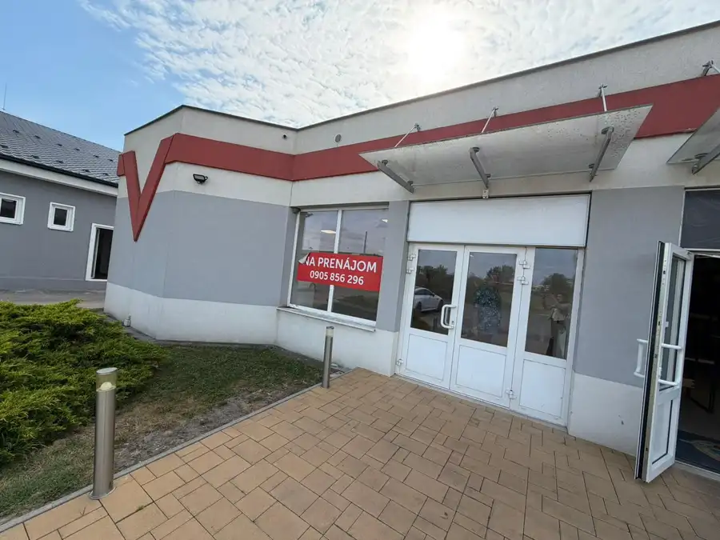
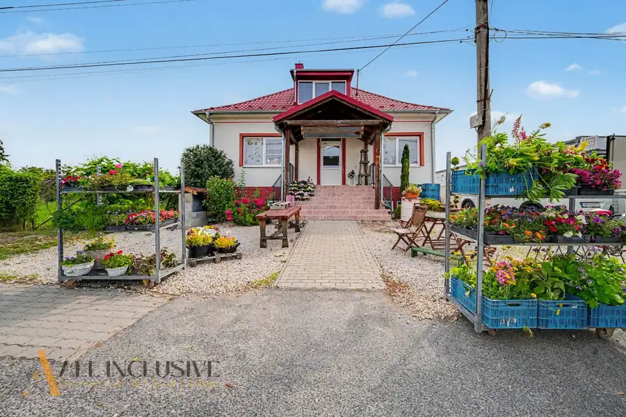
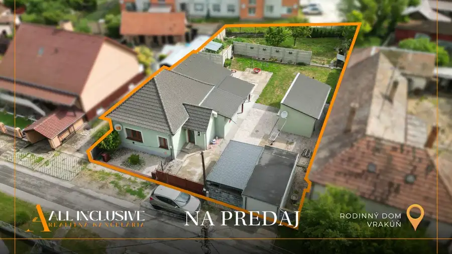

Na predaj 3-izbový rodinný dom, Most pri Bratislave
Most pri Bratislave
- Plocha88 m²
- Poschodie0. z 1
- Stavpo rekonštrukcii
O nehnuteľnosti
Táto nehnuteľnosť predstavuje zaujímavú príležitosť pre klientov, ktorí hľadajú bývanie v blízkosti Bratislavy, no zároveň preferujú pokojnejšie prostredie obce a komornejší charakter bývania.
Dom ponúka praktické dvojpodlažné riešenie, ktoré umožňuje prirodzene rozdeliť jednotlivé časti domácnosti a vytvoriť tak pohodlné zázemie pre každodenný život. Celkový charakter nehnuteľnosti dopĺňa menší pozemok, prístrešok s odkladacím priestorom, elektrická brána a kamerový systém, ktoré prinášajú praktické využitie aj zvýšený komfort pri každodennom fungovaní.
Rodinný dom bol kolaudovaný v roku 2007 a je postavený z tehly so zateplením. Vykurovanie zabezpečuje teplovodná pec alebo elektrický kotol napojený na radiátory. Počas teplejších mesiacov je k dispozícii klimatizácia v dvoch miestnostiach.
Veľkým benefitom je aj pochôdzna povala, ktorá poskytuje ďalší praktický priestor na uloženie sezónnych vecí, vybavenia domácnosti či predmetov, ktoré nechcete mať uložené v obytných miestnostiach.
Nehnuteľnosť sa predáva čiastočne zariadená, čo umožňuje novému majiteľovi bývanie postupne prispôsobiť vlastnému vkusu a potrebám bez toho, aby musel začínať úplne od začiatku.
• VLASTNOSTI NEHNUTEĽNOSTI
Rodinný dom je riešený ako 3-izbový a pozostáva z dvoch podlaží.
Dvojpodlažná dispozícia ponúka praktické rozdelenie priestoru a zároveň vytvára prirodzené oddelenie jednotlivých častí domácnosti. Jednotlivé miestnosti je možné využívať podľa potrieb nového majiteľa – ako dennú časť, spálňu, detskú izbu, pracovňu alebo hosťovskú izbu.
Celková úžitková plocha domu predstavuje 88 m², čo poskytuje dostatok priestoru na pohodlné každodenné fungovanie. Zastavaná plocha domu je 44 m².
K domu patrí aj pochôdzna povala, ktorá predstavuje praktický úložný priestor a môže byť využívaná na uskladnenie vecí, ktoré nie je potrebné mať priamo v interiéri.
Súčasťou nehnuteľnosti je tiež prístrešok s odkladacím priestorom, ktorý rozširuje praktické možnosti využitia pozemku.
• STAV NEHNUTEĽNOSTI A TECHNICKÉ RIEŠENIA
Rodinný dom bol kolaudovaný v roku 2007.
Je postavený z tehlovej konštrukcie so zateplením hrúbky 5 cm, čo predstavuje základ konštrukčného riešenia domu.
Dom je napojený na obecné inžinierske siete – elektrinu, obecnú vodu a kanalizáciu.
O vykurovanie sa stará teplovodná pec alebo elektrický kotol, pričom vykurovanie je riešené prostredníctvom radiátorov. Majiteľ tak má k dispozícii dve možnosti zabezpečenia tepelného komfortu podľa aktuálnej potreby a spôsobu využívania domácnosti.
Počas letných mesiacov zabezpečujú príjemnejšiu vnútornú klímu dve klimatizačné jednotky.
K zvýšeniu komfortu a bezpečnosti nehnuteľnosti prispieva kamerový systém a elektrická brána.
Technické vybavenie:
• tehlová konštrukcia
• zateplenie 5 cm
• kolaudácia v roku 2007
• teplovodná pec
• elektrický kotol
• radiátory
• 2x klimatizácia
• kamerový systém
• elektrická brána
• elektrina
• obecná voda
• kanalizácia
• pochôdzna povala
• prístrešok s odkladacím priestorom
• čiastočné zariadenie
• POZEMOK
Celková výmera pozemku spolu s rodinným domom predstavuje 104 m².
Pozemok je prakticky riešený a jeho súčasťou je aj prístrešok s odkladacím priestorom. Ten môže slúžiť na uloženie rôzneho vybavenia, náradia, sezónnych predmetov alebo ďalších vecí, ktoré je praktické mať mimo obytných priestorov domu.
Prístup na pozemok zabezpečuje elektrická brána, ktorá prináša pohodlie pri každodennom príchode a odchode a zároveň vytvára uzatvorenejší charakter nehnuteľnosti.
K príjemnému pocitu bezpečia prispieva aj kamerový systém.
• LOKALITA A DOSTUPNOSŤ
Rodinný dom sa nachádza v obci Most pri Bratislave, ktorá patrí do okresu Senec v Bratislavskom kraji. Obec je situovaná v bezprostrednom zázemí Bratislavy, vďaka čomu predstavuje atraktívnu lokalitu pre ľudí, ktorí chcú bývať mimo samotného hlavného mesta, no zároveň potrebujú zostať v jeho dobrej dostupnosti.
Práve poloha je jedným z najväčších benefitov tejto lokality. Most pri Bratislave ponúka možnosť bývania v pokojnejšom prostredí obce a zároveň umožňuje relatívne pohodlné každodenné dochádzanie za prácou, službami, nákupmi či ďalšími aktivitami do Bratislavy.
Obec má vlastné občianske zázemie, vďaka čomu je vhodná aj pre každodenný rodinný život. Nachádza sa tu základná občianska vybavenosť a služby, pričom širšie možnosti ponúka najmä blízka Bratislava a okolité mestské časti.
Veľkou výhodou je aj poloha v blízkosti Bratislavy, ktorá patrí medzi najvýznamnejšie pracovné, obchodné a spoločenské centrá Slovenska. Pre ľudí pracujúcich v Bratislave tak môže byť bývanie v Moste pri Bratislave zaujímavým kompromisom – pokojnejšie bývanie mimo mestského centra bez potreby vzdať sa dostupnosti hlavného mesta.
V širšom okolí sa nachádzajú nákupné možnosti, služby, zdravotnícke zariadenia, školy, škôlky, reštaurácie, športové a voľnočasové možnosti. Výhodou je tiež dostupnosť väčších nákupných a servisných centier v Bratislave a okolitých obciach.
Okolie Mosta pri Bratislave zároveň ponúka príjemnejší charakter bývania než hustá mestská zástavba. Pre mnohých záujemcov môže byť atraktívna práve možnosť po pracovnom dni opustiť rušnejšie mestské prostredie a vrátiť sa do pokojnejšej obce.
Lokalita je zaujímavá aj z pohľadu dopravného spojenia. Blízkosť Bratislavy umožňuje využívať jej rozsiahlu občiansku vybavenosť a pracovné príležitosti bez toho, aby bolo potrebné bývať priamo v centre mesta.
Most pri Bratislave tak predstavuje vyhľadávané zázemie hlavného mesta, ktoré spája výhody pokojnejšieho bývania s praktickou dostupnosťou Bratislavy. Je vhodnou voľbou pre ľudí, ktorí hľadajú vlastný rodinný dom a zároveň chcú mať mesto na dosah.
Výhodou je tiež samotný charakter nehnuteľnosti. Ide o bývanie, ktoré poskytuje viac súkromia a samostatnosti než klasický byt, pričom dvojpodlažné riešenie umožňuje efektívne využívať jednotlivé obytné priestory.
Táto kombinácia pokojnej lokality, blízkosti Bratislavy a praktického rodinného bývania robí z nehnuteľnosti zaujímavú možnosť pre klientov, ktorí nechcú robiť kompromis medzi dostupnosťou mesta a pokojnejším prostredím.
Ak hľadáte rodinný dom v bezprostrednom okolí Bratislavy, s praktickou dvojpodlažnou dispozíciou, klimatizáciou, možnosťou výberu spôsobu vykurovania, kamerovým systémom, elektrickou bránou a vlastným pozemkom, táto ponuka v Moste pri Bratislave môže byť práve tou správnou voľbou.
• CENA NEHNUTEĽNOSTI
Cena nehnuteľnosti je 255.000€,-/celkom.
•KONTAKT
CALL CENTRUM
Veronika Konkoly
ALL INCLUSIVE REAL Vám poskytne komplexné a profesionálne služby pri predaji, kúpe alebo prenájme nehnuteľností. V spolupráci s naším hypotekárnym partnerom Vám zaistíme najvýhodnejšie finančné riešenie pre Vašu nehnuteľnosť.
Vďaka našej externej spolupráci s renomovanou právnou kanceláriou, ako aj internému právnemu tímu, Vám zaručujeme vysoko kvalitný a nadštandardný právny servis, ktorý zabezpečí bezproblémový priebeh celého procesu.
Naša kancelária je hrdým členom najväčšieho združenia realitných kancelárií – REALITNÁ ÚNIA, a zaväzuje sa dodržiavať najprísnejšie štandardy a zásady kvality v poskytovaní našich služieb. Okrem toho je naša kancelária poistená pre prípad zodpovednosti za spôsobené škody, čím garantujeme našim klientom maximálnu bezpečnosť a ochranu.
Nehnuteľnosť bola pripravená s homestaging oddelením a odprezentovaná s profesionálnym fotografom a kameramanom našej spoločnosti. Veľmi radi Vám pomôžeme pri efektívnom a dôstojnom predaji či prenájme aj Vašej nehnuteľnosti.
Text a fotografie sú autorským dielom realitnej kancelárie ALL INCLUSIVE REAL, s.r.o.
Parametre
| Rozloha pozemku | 104 m² |
|---|---|
| Zastavaná plocha | 44 m² |
| Úžitková plocha | 88 m² |
| Poschodie | prízemie |
| Počet poschodí | 1 |
| Stav | po rekonštrukcii |
| Voda | verejný vodovod |
| El. napätie | 230V |
| Plyn | nie |
| Kanalizácia | áno |
| Postavené z | tehla |
| Energetický certifikát | nie |
| Terén | rovina |
| Dátum zverejnenia | 22. 9. 2026 |
Kde to je
Mohlo by Vás zaujímať

Nebytové priestory7 1 000 €Na prenájom nebytový priestor , Palárikovo Palárikovo 115 m² Realitná kancelária ALL INCLUSIVE REAL Vám ponúka na prenájom priestranný nebytový priestor v obci Palárikovo, situovaný vo frekventovanej lokalite…
Nebytové priestory10 225 000 €Na predaj polyfunk.objekt s možn. bývania a podnikania Gabčíkovo 260 m² Realitná kancelária ALL INCLUSIVE REAL Vám ponúka na predaj polyfunkčný objekt nachádzajúci sa priamo v centre mesta Gabčíkovo, na veľmi dobre…
Rodinné domy10 224 900 €Na predaj 4-izb. rodinný dom s garážou, Vrakúň Vrakúň 4-izbový100 m² Realitná kancelária ALL INCLUSIVE REAL Vám ponúka na predaj 4-izbový rodinný dom s garážou a vedľajšou budovou, nachádzajúci sa v obci Vrakúň – v…